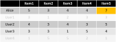
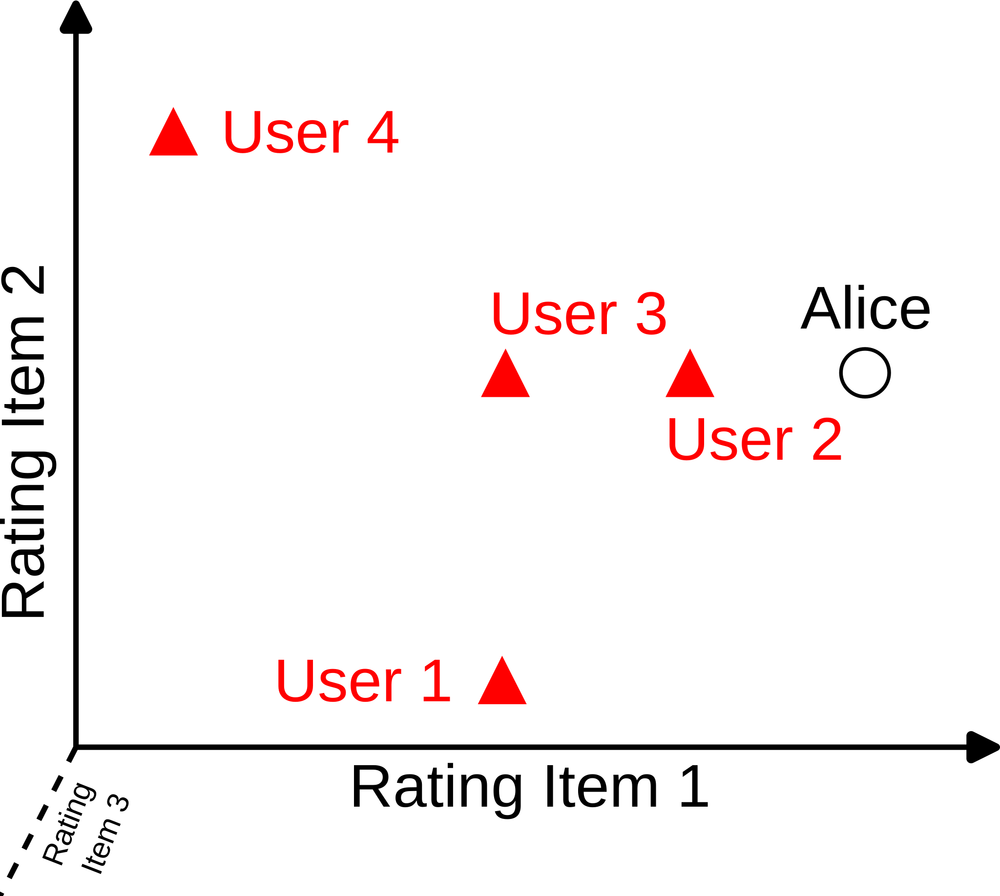
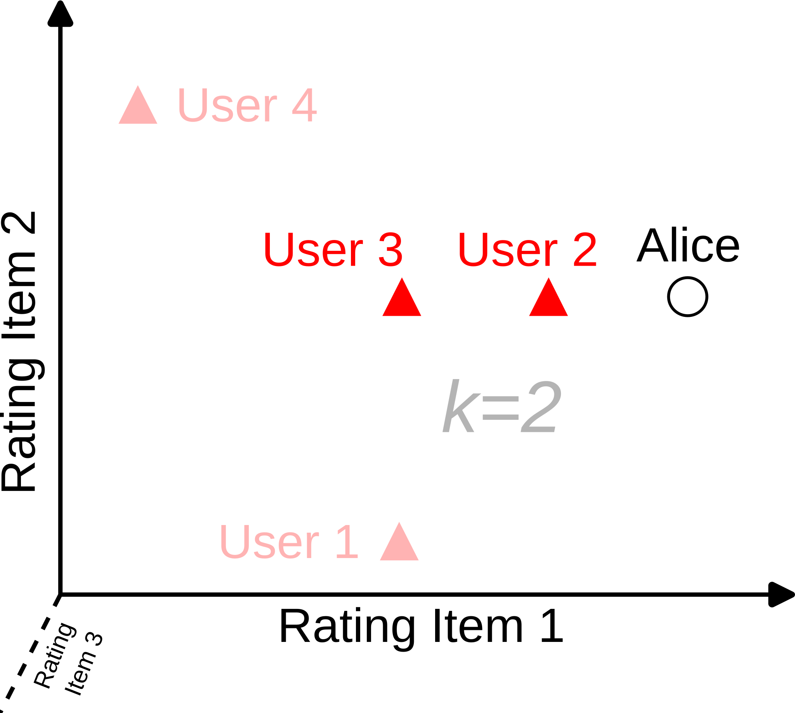

Micro-Degree Artificial Intelligence and Society
– Technical Aspects of AI –
Lecture 4.5: Building Recommender Systems


Basic Principle: Personalized Recommendation
- Recommendation: Matching user profile and item profile.
- Single recommendation, no further interaction, no adaptation to behavior.
Content-Based Recommendation
- Automated construction of a user profile based on the characteristics of the items with which the user has interacted.
- Recommendation: Matching user history and item profile.
- Assumption: User preferences in the future are similar to preferences in the past.
Collaborative Filtering
- Using the opinion or behavior of other users for recommendation.
- Recommendation: matching similar users and recommending items other users liked.
- Assumption: Similar users like similar items.
Collaborative Filtering: Implementation Idea
We formulate the problem as "completing a table":
- We have information about how well our users rate different items (ratings from 1 to 5).
- For user Alice, we are missing a rating for item 5.
- Idea: we use the ratings of other users who are similar to Alice to predict Alice's rating for item 5 → supervised learning.

Collaborative Filtering: Algorithm
- Find users who are similar to Alice, meaning those who liked the same items similarly well.
- Use the average rating of these users for the missing item to predict whether Alice will like it too.
- Follow this procedure for all items Alice has not yet seen and recommend the item with the best predicted rating.
How well does the algorithm work?
→ Remove some of Alice's known ratings and predict them with this method. Calculate the prediction error with the root mean squared error.
K-Nearest Neighbors Algorithm
Reminder: To classify a new observation:
- Find the k nearest data points ("k-nearest neighbors").
- Choose the class that the majority of the nearest neighbors have (majority vote).

Identifying Similar Users
- Users are characterized by their ratings for items.
- Use e.g., cosine similarity to measure similarity between users.
- Find the k users most similar to Alice.
- Use the ratings of these users to predict ratings for items Alice has not yet seen.





Summary
- Recommender systems can use information from users, item properties, and information from the user community for recommendations.
- Three approaches:
- Personalized recommendation
- Content-based recommendation
- Collaborative filtering
- In most modern recommender systems, all three approaches are used simultaneously.